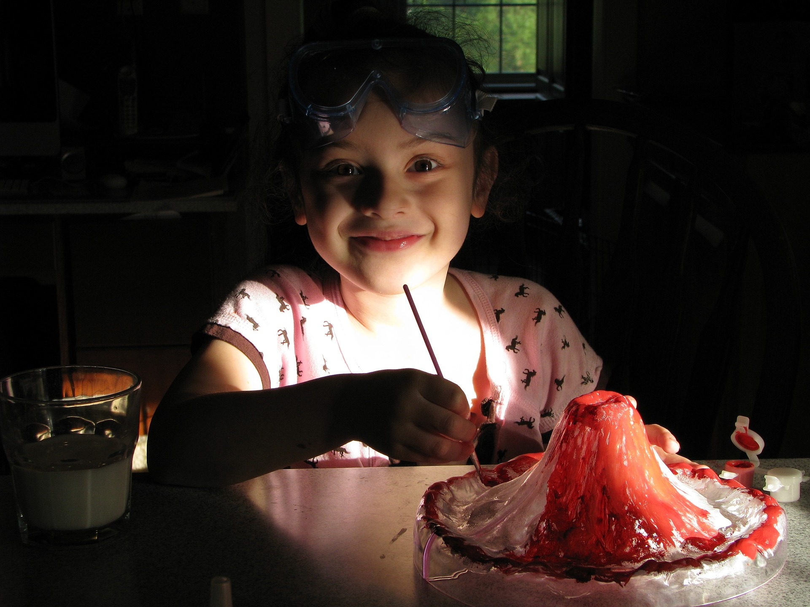

Design Thinking en el aula:
- Como metodología para el aprendizaje basado en proyectos: Pueden ser proyectos técnicos, de investigación, de resolución de problemas o de búsqueda de oportunidades, de mejora del ámbito educativo o de participación, o proyectos para aprender habilidades y desarrollar competencias… cualquier proyecto puede nutrirse de la metodología o alguna parte de ella y de alguna de las herramientas que se utilizan en Design Thinking.

Algunas ideas sobre Design Thinking y aprendizaje por proyectos:
Puede se una hoja de ruta para resolver problemas centrados en las personas.
Puedes integrar esta filosofía en los proyectos que ya realizas, integrando aquellas fases o herramientas que aportan una perspectiva más cercana a la realidad.
Posibilita conocer al usuario del producto/servicio y ayuda a que tu alumnado pueda enfocar los proyectos desde el principio en sus necesidades.
Los proyectos pueden ser solo de tu asignatura o de varias asignaturas.
Utilizando la metodología podemos acercarnos al espíritu STEAM (Acrónimo de Science, Technology, Engineering, Arts and Mathematics o, en español, de Ciencia, Tecnología, Ingeniería, Arte y Matemáticas) Implica el aprendizaje de estas cinco disciplinas, que tradicionalmente se han enseñado por separado, de forma integrada y bajo un enfoque tanto teórico como también práctico.
Integrar esta mentalidad en el centro puede posibilitar la colaboración interdepartamental y los proyectos globales. Puedes facilitar, al utilizar Design Thinking como lenguaje común, que los profesores de distintas asignaturas o disciplinas puedan trabajar en un mismo proyecto y puedan coordinarse internamente de forma que sea más factible el intercambio de conocimiento.
- Metodología para el trabajo creativo en equipo: Es una metodología que se basa en aprender haciendo. Llevar esta metodología al trabajo en equipo permite desarrollar habilidades comunicativas, de liderazgo, etc., que favorecen la capacitación para trabajar en equipo ahora y en el futuro.

Utilizarla como base en el día a día del trabajo práctico en el aula por parte del alumnado, puede servir como un gran entrenamiento para el trabajo creativo en equipo en el futuro entorno profesional.
No tiene sentido trabajar con la metodología individualmente. Su planteamiento promueve y permite la integración en un equipo de cualquier alumno o alumna, independientemente de su edad, cultura o nivel o expediente académico. La diversidad de puntos de vista hará más rico el proceso.
El docente asume el rol de dinamizador, que sugiere, ayuda y colabora y está dispuesto a aprender en cada paso del proceso.
- Metodología que empuja a conocer lo que hay fuera del aula.
Design Thinking se basa en la observación. La metodología potencia la curiosidad y facilita que el alumnado se interese por lo que sucede fuera del centro, interactúe con personas diferentes, con otros puntos de vista, en otros contextos.

Es una metodología que se basa en el conocimiento en profundidad de los temas o problemas a resolver, pero no desde un punto de vista teórico, sino empírico. Para conseguir ese conocimiento tenemos que salir de nuestro “mundo”, de nuestra cotidianidad.
Al plantear los proyectos, surgirán, aún sin buscarlos a priori, oportunidades de colaboración con otras organizaciones o colectivos.
La apertura del alumnado al exterior se puede favorecer al plantear temas de trabajo o retos relacionados no solo con el entorno del centro, en cuanto a espacio físico; sino también con toda la comunidad educativa, con el barrio, la ciudad, el entorno empresarial, etc.
- Metodología para la participación:
Design Thinking necesita la proactividad de las personas para llegar a ideas de mejora.
Si una persona está integrada en un equipo trabajando con base a la metodología Design Thinking es imprescindible su punto de vista, su mirada; es seguro que de una u otra manera va a participar. Va a descubrir el ámbito en el que poder aportar al equipo: liderando, coordinando, posibilitando la creatividad, tangibilizando soluciones, etc.
El dinamizador se encargará de que todos vayan participando de una forma gradual, motivando y animando a dar ese paso.
El alumnado que ha vivido este proceso y ha trabajado en equipo con metodologías ágiles tiene más recursos comunicativos, de representación visual, de toma de decisiones... Le resulta más natural aportar su opinión, ofrecer alternativas a retos o ideas; de modo que considero que llega a interiorizar que esta conducta le permite poder expresarse, plantear sus propios retos y estar en su contexto de una forma activa.
Es por eso que el alumnado que ha vivido repetidamente este tipo de experiencias en entornos en el que se le ha alentado a plantear sus propios temas de interés o sus propios retos de mejora, es o se convertirá en la ciudadanía que va a participar de la toma de decisiones en su barrio o comunidad, que va a poder aportar alternativas, y no solo críticas, en el entorno donde se encuentre.

Estoy dibujando la idea del ciudadano co-creador de soluciones urbanísticas, por ejemplo, o de políticas públicas en el ámbito de la participación ciudadana, un entorno para el aprendizaje y la aportación, que como el educativo, se encuentra en constante evolución.
Considero que experimentar con esta metodología potencia la cultura de participación en las personas, y ayuda a que pasen de ser individuos pasivos a actores proactivos. De estar desligados de su entorno educativo y social a implicarse en la búsqueda de soluciones y nuevas ideas.
Algunas ideas sobre Design Thinking y participación:
- Su metodología potencia que el alumnado quiera proponer mejoras
- Permite que el alumnado pueda crear y prototipar soluciones
- Plantea un punto de vista activo como individuo
- Lleva a la acción
- Coloca al alumnado en el rol de actor, de emisor, no solo en el de receptor.
Tres experiencias de la aplicación de la metodología en el aula
Design In Schools
Macquarie Primary School, Australia, 2015
La escuela se puso en contacto con DMA (Design Managers Australia) para abordar un problema: un “peligroso” aparcamiento escolar.
Se formó un equipo de diseño de servicios: 18 jóvenes de 11 años dinamizados por diseñadores profesionales.
Objetivo: diseñar una solución a un complejo problema comunitario
En este enlace a la página web de DMA encontrarás la crónica del proyecto, que fue galardonado con el Service Design Award 2017 por Cambio sistémico en educación.

Video DMA
Vídeo en el que se muestra como fue el proyecto en Macquarie Primary School (video en Inglés)
Proyecto “Design for Change”
Colegio Montserrat. Barcelona, 2016
Proyecto que se llevó a cabo con alumnos de primaria.
Objetivo: Mejorar el centro educativo.
Se propuso a los alumnos y alumnas que pensaran en ideas de mejora para su centro, realizar prototipos de las mismas y las implementaran.
Video experiencia Colegio Montserrat
Proyecto mochilas idénticas
Forbes Primary School. Australia, 2017
Objetivo: Que los alumnos solucionen un problema con las mochilas
Se propone a los alumnos que solucionen un problema utilizando la metodología Design Thinking: buscan soluciones, seleccionan una de ellas, la prototipan, la construyen en 3D e implementan la solución.
Video experiencia Forbes Primary School.
En el vídeo se pueden ver las etapas del proceso.

Design Thinking en educación por Elena Bernia bajo licencia Creative Commons Reconocimiento-NoComercial-CompartirIgual 4.0 Internacional License.